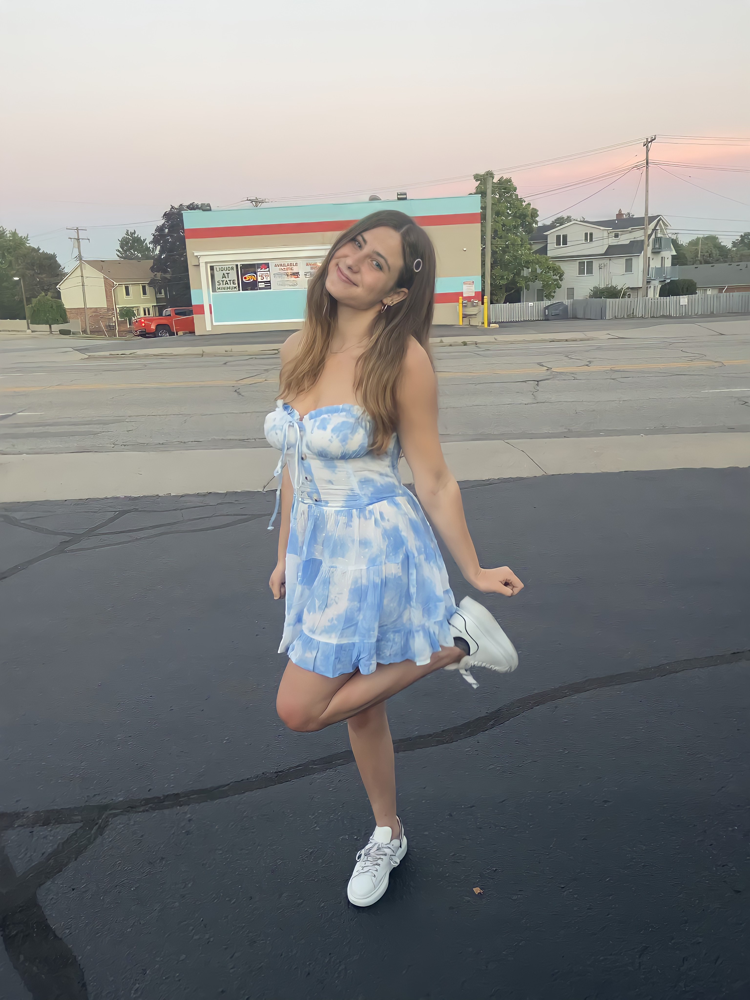

Hi! My name is Lizzie.
Curiosity and creativity are the building blocks of my personality. Intrigued by the power of words, my interests lie at the intersection of marketing, fashion, and writing.
I am a driven, creative student at the University of Michigan studying User Experience Design in the School of Information. My major is complemented with a minor in Business through Ross to further enhance my professional development. My interests lie at the intersection of marketing, fashion, and writing.
When I work with others in the future, I want to be the person that I would be looking for as a leader. My strong interpersonal skills in conjunction with my academics will guide me on the track to not only become the mentor I seek, but also to utilize my language and imagination in order to create and ultimately inspire others to use theirs.
